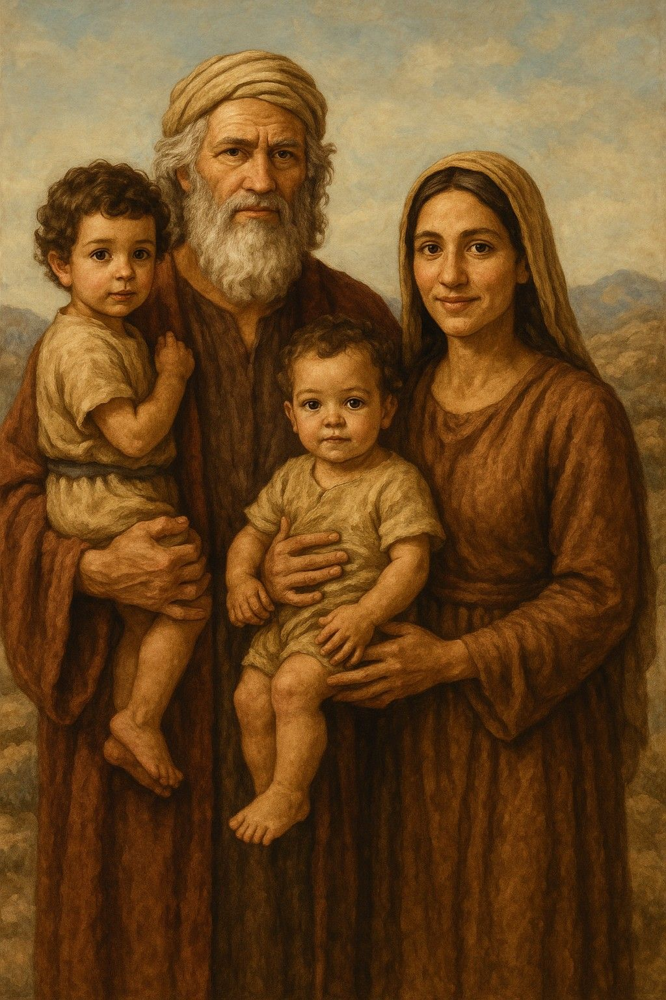
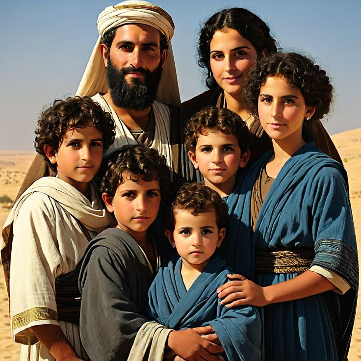
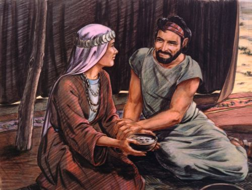
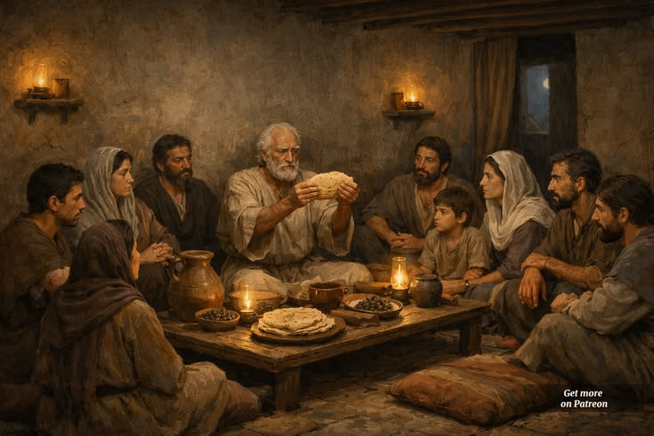
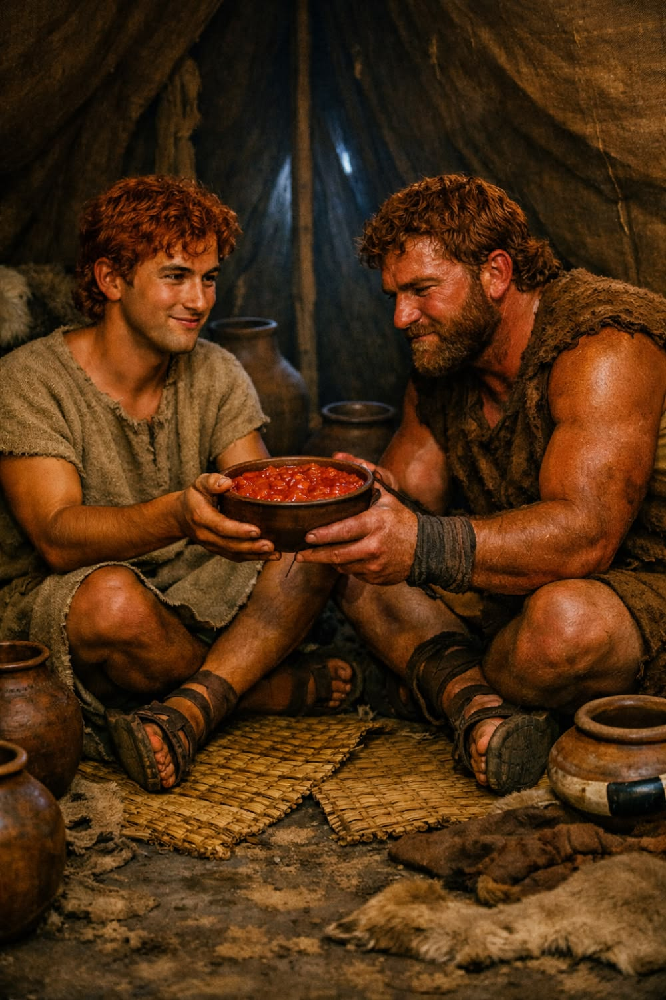

The Dreamer and the Redeemer
“Lord, help me to trust Your plan like Joseph — to believe that even in betrayal, pain, or loneliness, You are still working for my good. Give me the faith to hold on to my dreams, even when the world calls them impossible, for You are the God who turns prisons into palaces and tears into triumphs."
Jacob and Joseph
Jacob’s Birth
யாக்கோபின் பிறப்பு
Jacob's Birth Jacob was born to Isaac and Rebekah as the son through whom God would continue His covenant promise. The covenant that God had established with Abraham was passed on through Isaac and later through Jacob.
யாக்கோபு, இசாகின் மகன் மற்றும் ஆபிரகாமின் பேரன். அவருக்கு பன்னிரண்டு (12) மகன்கள் பிறந்தனர். இவர்களாலே இஸ்ரவேல் 12 குலங்கள் (Tribes of Israel) உருவானன. 🇮🇱 யாக்கோபின் மக்களில் ஒருவன் யோசேப் (Joseph) — மிகவும் புத்திசாலி, கனவுகள் காணும் சிறுவன். அவன் சிறுவயதிலேயே தேவனை நம்பியவன்; நல்ல இதயமுடையவன்.
Jacob’s Family
யாக்கோபின் குடும்பம்
For many years, Rebekah was unable to have children. So Isaac prayed to the Lord on behalf of his wife, and God answered his prayer by enabling Rebekah to conceive. During her pregnancy, the two babies struggled with each other in her womb. Troubled by this, Rebekah sought the Lord to understand why this was happening. Then God said to her, "Two nations are in your womb, and two peoples from within you will be separated. One people will be stronger than the other, and the older will serve the younger."
ரெபெக்காளுக்கு நீண்ட காலம் குழந்தை இல்லை. அதனால் ஈசாக்கு தனது மனைவிக்காக தேவனிடம் ஜெபித்தார். தேவன் அந்த ஜெபத்தைக் கேட்டு, ரெபெக்காளை கர்ப்பவதியாக்கினார். ஆனால் அவளுடைய கர்ப்பத்தில் இருந்த இரண்டு குழந்தைகளும் ஒன்றோடொன்று போராடிக் கொண்டிருந்ததால், ரெபெக்காள் தேவனிடம் காரணத்தைக் கேட்டார். அப்போது தேவன் அவளிடம், "உன் கர்ப்பத்தில் இரண்டு ஜாதிகள் இருக்கின்றன; இரண்டு மக்கள் உன்னிடமிருந்து பிரிவார்கள். ஒரு மக்கள் மற்ற மக்களை விட வலிமையுள்ளவர்களாக இருப்பார்கள்; மூத்தவன் இளையவனுக்குச் சேவை செய்வான்." என்று அறிவித்தார்.

Isaac and Rebekah – Jacob's Parents
பெற்றோர் – ஈசாக்கு மற்றும் ரெபெக்காள்
Jacob's father was Isaac, the son whom God had promised to Abraham and Sarah. Isaac was known as a peaceful man who trusted God and lived a life of faith. Jacob's mother was Rebekah. The Bible portrays her as a woman of faith who played an important role in her family. Remembering God's prophecy about her sons, she gave special support to Jacob.
யாக்கோபின் தந்தை Isaac, Abraham மற்றும் Sarah ஆகியோருக்கு தேவன் வாக்குறுதியின்படி பிறந்த மகன் ஆவார். அவர் அமைதியான, தேவனை நம்பிய வாழ்க்கை வாழ்ந்தவர். யாக்கோபின் தாயார் Rebekah. அவர் தேவனை நம்பிய பெண்ணாகவும், தனது குடும்பத்தில் முக்கிய பங்கு வகித்தவராகவும் வேதாகமத்தில் குறிப்பிடப்படுகிறார். தேவனுடைய தீர்க்கதரிசனத்தை மனதில் வைத்து, யாக்கோபுக்கு அதிக ஆதரவு கொடுத்தார்.
Esau – Jacob's Twin Brother
இரட்டைச் சகோதரன் – ஏசா
Esau was Jacob's twin brother and was born first. His body was covered with red hair, so he was given the name Esau. After Esau was born, Jacob came out holding onto Esau's heel. Because of this, he was named Jacob. The name Jacob means "heel-grabber" or "one who takes another's place (supplanter)."
Esau (ஏசா) யாக்கோபின் இரட்டைச் சகோதரன். முதலில் ஏசா பிறந்தார். அவரது உடல் முழுவதும் சிவப்பு நிற ரோமத்தால் மூடப்பட்டிருந்ததால் அவருக்கு ஏசா என்று பெயரிடப்பட்டது. அதன்பின் பிறந்த யாக்கோபு, ஏசாவின் குதிகாலைப் பிடித்தபடி வெளியே வந்தார். அதனால் அவருக்கு யாக்கோபு என்று பெயரிடப்பட்டது. "யாக்கோபு" என்ற பெயருக்கு குதிகாலைப் பிடிப்பவன் அல்லது மற்றொருவரின் இடத்தைப் பெறுபவன் என்ற பொருள் உள்ளது.

Esau Returns Home Hungry
ஏசா பசியுடன் வீட்டிற்கு வந்தது
Esau and Jacob were the twin sons of Isaac and Rebekah. Since Esau was born first, he held the birthright as the firstborn. The birthright was more than just an inheritance of property—it included family leadership, a double share of the inheritance, and the privilege of sharing in God's covenant blessings.
Esau மற்றும் Jacob ஆகியோர் Isaac மற்றும் Rebekah ஆகியோரின் இரட்டை மகன்கள். ஏசா மூத்தவனாகப் பிறந்ததால், குடும்பத்தின் பிறப்புரிமை (Birthright) அவனுக்குச் சொந்தமானது. பிறப்புரிமை என்பது வெறும் சொத்து உரிமை மட்டுமல்ல; குடும்பத் தலைமை, இரட்டிப்பு பங்கு, மற்றும் தேவனுடைய உடன்படிக்கையின் ஆசீர்வாதத்தில் பங்குபெறும் சிறப்புரிமையையும் குறிக்கிறது.

Esau Returns Home Hungry
ஏசா பசியுடன் வீட்டிற்கு வந்தது
One day, Esau returned home from hunting exhausted and extremely hungry. At that time, Jacob was cooking lentil stew. Smelling the delicious food, Esau immediately wanted to eat it and said to Jacob, "Please let me have some of that red stew, because I am exhausted."
ஒருநாள் ஏசா வேட்டைக்குச் சென்று மிகவும் களைப்புடனும் கடுமையான பசியுடனும் வீட்டிற்குத் திரும்பினார். அப்போது யாக்கோபு பருப்பு கூழ் சமைத்துக் கொண்டிருந்தார். அந்த உணவின் வாசனையைக் கண்ட ஏசா, உடனே அதைச் சாப்பிட விரும்பி, "அந்தச் சிவப்பான கூழில் கொஞ்சம் எனக்குக் கொடு; எனக்கு மிகவும் பசிக்கிறது" என்று யாக்கோபிடம் கேட்டார்.

Esau Sells His Birthright for a Bowl of Stew
பருப்பு கூழுக்காக பிறப்புரிமையை விற்றது
Seeing Esau's condition, Jacob took advantage of the situation and said, "First, sell me your birthright." Esau replied, "Look, I am about to die. What good is my birthright to me?" Jacob then asked Esau to swear an oath. Esau swore to him and sold his birthright to Jacob. Afterward, Jacob gave Esau bread and some lentil stew. Esau ate, drank, got up, and went on his way. The Bible concludes this event by saying, "Thus Esau despised his birthright." This incident reveals Esau's willingness to exchange a lasting spiritual blessing for a temporary physical need, showing that he placed little value on the privileges and responsibilities of his birthright.
யாக்கோபு இந்தச் சூழ்நிலையைப் பயன்படுத்தி, "முதலில் உன் பிறப்புரிமையை எனக்குக் கொடு" என்று ஏசாவிடம் கூறினார். அதற்கு ஏசா, "நான் பசியால் சாகப்போகிறேன்; பிறப்புரிமையால் எனக்கு என்ன பயன்?" என்று பதிலளித்தார். யாக்கோபு அவனிடம் சத்தியம் செய்யச் சொன்னார். ஏசாவும் சத்தியம் செய்து, தனது பிறப்புரிமையை யாக்கோபுக்கு விற்றுக் கொடுத்தார். பின்னர் யாக்கோபு அவருக்கு அப்பமும் பருப்பு கூழும் கொடுத்தார். ஏசா சாப்பிட்டு, குடித்து, எழுந்து சென்றார். வேதாகமம் இந்த நிகழ்வை முடிக்கும்போது, "இவ்வாறு ஏசா தனது பிறப்புரிமையை அற்பமாக எண்ணினான்" என்று குறிப்பிடுகிறது.

Jacob Receives the Birthright
யாக்கோபு பிறப்புரிமை பெற்றது
Through this event, Jacob obtained Esau's birthright. However, long before this, God had already told Rebekah, "The older will serve the younger." Although Jacob received the birthright, the way he obtained it later led to conflict within the family and hostility between the two brothers. At the same time, this account shows that God's sovereign plan continued to be fulfilled despite human weakness and imperfect choices.
இந்த நிகழ்வின் மூலம் யாக்கோபு, ஏசாவின் பிறப்புரிமையைப் பெற்றார். இருப்பினும், தேவன் முன்பே Rebekah ரெபெக்காளிடம், "மூத்தவன் இளையவனுக்குச் சேவை செய்வான்" என்று அறிவித்திருந்தார். யாக்கோபு பிறப்புரிமையைப் பெற்றாலும், அதை அடைந்த விதம் பின்னர் குடும்பத்தில் பல பிரச்சினைகளுக்கும் சகோதரர்களுக்கிடையே பகைக்கும் காரணமாக அமைந்தது. அதேவேளையில், தேவனுடைய திட்டம் மனிதர்களின் பலவீனங்களின் மத்தியிலும் தொடர்ந்து நிறைவேறியது.
"When life feels uncertain, strengthen my heart with Your promises. Remind me that Your timing is perfect, even when I cannot see the path ahead. Teach me to forgive like Joseph — to let go of bitterness, and to love those who have hurt me, knowing that forgiveness brings peace and healing. Help me to see Your purpose in every season — in waiting, in weeping, and in rejoicing. Let every trial refine my faith, and every blessing remind me of Your grace. May my life be a living testimony that You are faithful, and that Your plans are always greater than my own."